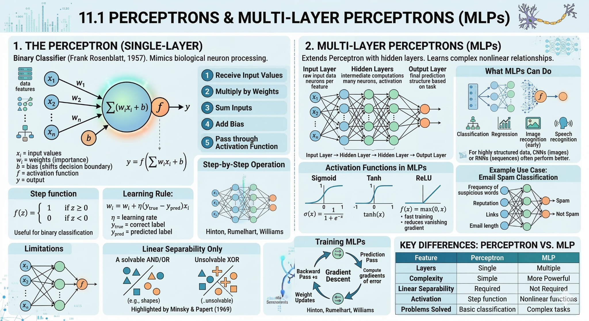
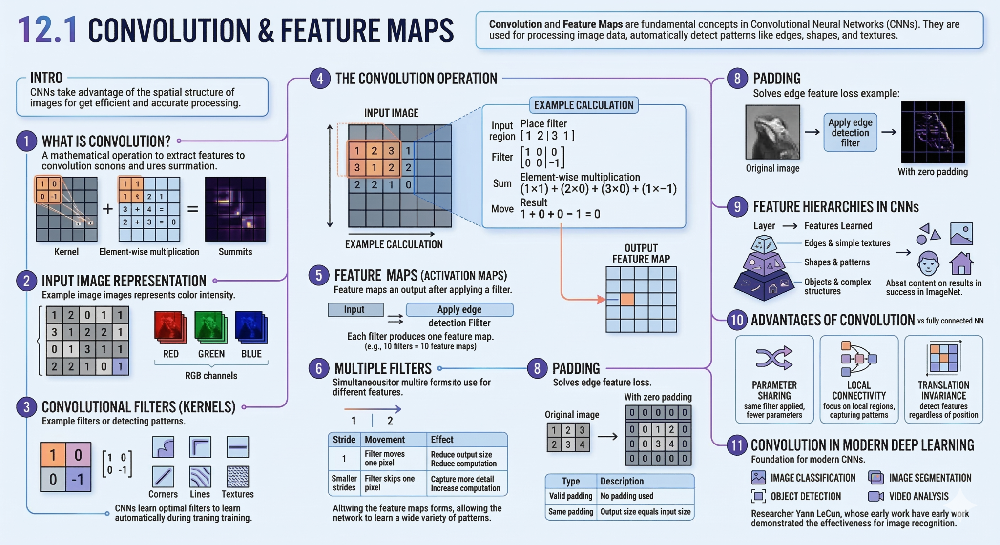
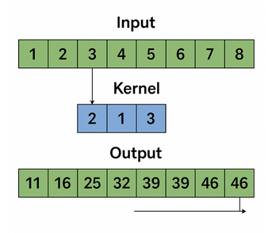
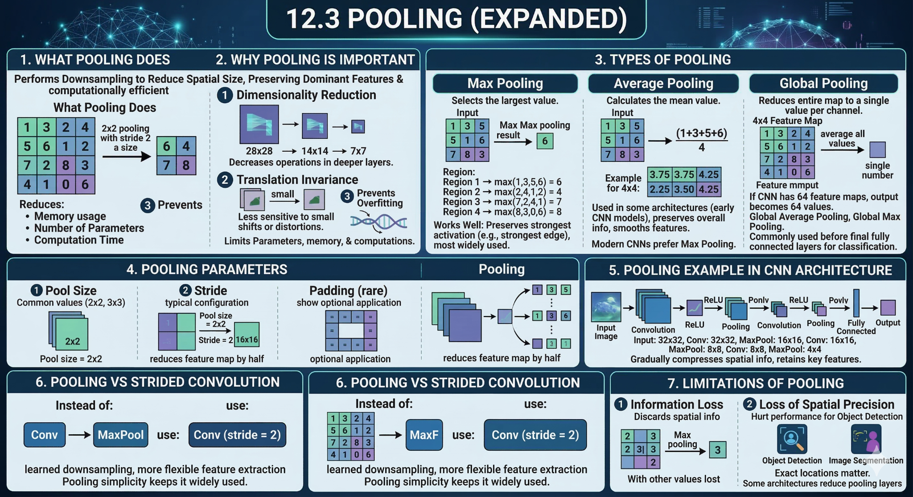
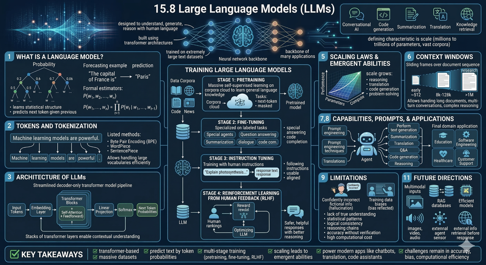

Content from Choosing Your First Conventional ML Baseline
Last updated on 2026-04-13 | Edit this page
Estimated time: 65 minutes
Overview
Questions
- What counts as a sensible baseline or comparison model?
- Which conventional models belong in my starter model basket?
Objectives
- Define both a trivial reference baseline and a practical model basket.
- Choose an initial model based on task type, data shape, interpretability, and time available.
- Distinguish between a first baseline model and a stronger comparison model.
Why start with conventional models
When you first start modelling a real problem, you usually need a small basket of models that are understandable, quick to run, and easy to compare.
This page is designed to support student viewing during the workshop. Use it as a reference while you work through the notebook activities.
Good first choices are driven by four practical questions:
- What task type has already been identified?
- What does the data look like?
- Can you explain the result?
- Can you build and evaluate it today?
For this reason, conventional machine learning is often the right place to start. It gives you a reference point before you decide whether you need more complex feature engineering or feature learning.
What this page assumes
This page assumes you have already worked through the earlier problem definition material or the worked example, and therefore already have a rough answer to questions such as:
- Is this a regression, classification, or clustering task?
- What is the target or prediction goal?
- What would count as a wrong answer in context?
It also assumes you have already done the basic data preparation needed before conventional machine learning, for example:
- explored the dataset and checked what each variable means;
- cleaned the data and handled obvious data-quality problems;
- preprocessed the data into a usable modelling table;
- converted categorical variables into numeric representations such as dummy variables where needed;
- made sure the inputs are now numeric and ready for machine-learning models.
If you are still unsure about the task type, return to the earlier problem-definition material or the worked example before choosing from the model basket below. If the data are still not in a modelling-ready numeric form, finish that preparation step first and then return to this page.
Confirm the modelling goal
Before selecting a model, write down:
- your task type;
- your target or prediction goal;
- what a wrong answer looks like;
- whether interpretability matters for your audience.
Two kinds of baseline
It helps to separate two different baseline ideas.
1. Trivial reference baseline
This is the simple strategy you should try to beat.
- Regression: predict the mean or median every time.
- Classification: predict the majority class every time.
- Clustering: compare against a simple no-clustering description or a very rough grouping.
This step matters because it answers a basic question: is the machine learning model learning anything useful beyond a trivial rule?
2. First machine learning baseline
This is the first real model you build.
- Regression: Linear Regression.
- Classification: Logistic Regression.
- Interpretable non-linear option: Decision Tree.
- Similarity-based option: k-Nearest Neighbours.
- Clustering: K-Means.
These are strong first choices because they are fast to run, widely available, and simple enough to explain.

A model basket for students
You do not need to try every model. You do need a small set of sensible options.
Core starter models
These are the safest first models for most people starting out.
- Linear Regression for continuous targets when you want a quick, interpretable baseline.
- Logistic Regression for categorical targets when you want a strong, simple classifier.
- Decision Tree when interpretability matters or you want to inspect simple decision rules.
- k-Nearest Neighbours as a useful comparison model when local similarity may matter.
- K-Means for simple exploratory clustering.
Useful task-specific additions
- Naive Bayes for sparse text or count-based text features.
- Random Forest when you want a stronger tree-ensemble comparison with limited tuning. It combines many trees built in parallel and averages their predictions.
- Support Vector Machine when margins or high-dimensional spaces may matter.
- XGBoost or Gradient Boosting when you want a stronger boosted-tree comparison and have time for the extra setup and tuning. Unlike random forests, boosting builds trees in sequence so that each new tree tries to correct errors made by the earlier ones.
How to think about the basket
- pick one trivial reference baseline;
- pick one first conventional ML baseline;
- optionally pick one stronger comparison model.
Not every model in the basket is equally suitable as the first model. Random forests, support vector machines, and boosted trees are often best used as comparison models after a simpler baseline is already in place. However, if you already have some preliminary analysis based on linear models, simple baselines, or earlier exploratory modelling, you may reasonably move on to stronger non-linear models to test whether they capture structure that the simpler model is missing.
Choosing the first model
The sections below are split by model type so they are easier to find from the lesson index and easier to teach one at a time.
Linear Regression
- Best for: small or medium tabular regression.
- Why start here: quick, interpretable, easy to explain.

Key
points: The model represents the outcome as a weighted sum of
the input variables. Learning means adjusting those weights to minimize
prediction error on a continuous target.
Logistic Regression
- Best for: small or medium tabular classification.
- Why start here: strong baseline with a simple decision boundary.

Key
points: The model uses a weighted combination of the inputs and
then applies a logistic function to turn that score into a class
probability. Learning means adjusting the weights so the predicted
probabilities better match the observed labels, usually by minimizing
cross-entropy loss; it can be viewed as a neural network with no hidden
layer.
Logistic regression beyond binary classification
Logistic regression is often first taught for binary classification.
- Is logistic regression only for binary classification?
- If not, how can it be extended to multiclass classification?
- How is the model learned from the training data?
No. Logistic regression is often introduced first for binary classification, but it is not limited to only two classes.
For multiclass classification, the output layer can use a softmax activation so the model produces one probability per class, with those probabilities summing to 1. In that form, logistic regression becomes a simple multiclass linear classifier.
The model is learned by adjusting its weights to minimize cross-entropy loss, usually with a gradient descent based optimization algorithm. That is the same general optimization idea used when training neural networks.
Decision Tree
- Best for: interpretable tabular problems where simple rules matter.
- Why start here: easy to inspect and discuss.

Key
points: A decision tree represents the model as a sequence of
if-then splits. Learning means choosing splits that make the resulting
groups purer for classification or more consistent for regression.
Decision trees, impurity, and linear boundaries
When fitting a decision tree for classification:
- What does it mean to say that a split makes the child nodes “purer”?
- How can that impurity be measured?
- Is a decision tree a linear classifier?
For classification, a split is useful when it makes the resulting child nodes contain more cases from a single class than before. In other words, the split reduces class mixing within each node.
That impurity can be measured in different ways. Two common choices are Gini impurity and entropy. Both try to quantify how mixed the classes are inside a node, and the tree algorithm searches for splits that reduce that impurity as much as possible.
No, a decision tree is not a linear classifier. A linear classifier uses a single linear boundary in the feature space, while a decision tree builds a sequence of axis-aligned splits that creates a piecewise, rule-based decision boundary.
k-Nearest Neighbours
- Best for: a simple comparison model when local similarity matters.
- Why start here: gives a useful contrast with linear methods.

Key
points: k-nearest neighbours predicts from the nearest training
cases, where “nearest” is defined by a distance measure in the feature
space. For classification, it takes a majority vote across the
k neighbours; for regression, it can take their
average.
k-nearest neighbours for regression
k-nearest neighbours is often introduced as a classification method.
- Can it also be used for regression?
- How do we decide which neighbours count as the “nearest” ones?
Yes. For regression, k-nearest neighbours can predict by averaging
the target values of the k nearest neighbours instead of
taking a majority vote.
The “nearest” neighbours are chosen using a distance measure in the feature space, such as Euclidean distance. That is why scaling can matter a lot for k-nearest neighbours: variables on larger numeric scales can otherwise dominate the distance calculation.
K-Means
- Best for: exploratory unlabeled grouping.
- Why start here: simple clustering workflow.

Key
points: K-Means represents each cluster by a centre point.
Learning means repeatedly assigning cases to the nearest centre and
updating the centres until the grouping stabilizes.
Naive Bayes
- Best for: sparse text classification and count-based features.
- Why start here: good simple baseline for bag-of-words style inputs.

Key
points: The model treats features as separate pieces of
evidence and combines them probabilistically for each class. Learning
mostly means estimating how often features appear within each class from
the training data.
Random Forest
- Best for: a stronger tabular comparison after a first baseline.
- Why start here: many trees are averaged together, which usually improves stability over a single tree.
Random forests and feature selection
Random forests are often introduced as a stronger tree-based comparison model.
- Can a random forest be used for feature selection?
- What advantage does a random forest have over a single decision tree?
Yes, a random forest can be used for feature selection in a rough, practical sense. Because it can estimate feature importance, it can help you identify variables that seem to contribute more to the predictions. That said, feature-importance scores are not a perfect or universal measure, so they should be treated as guidance rather than proof that a feature is truly important.
The main advantage of a random forest over a single decision tree is stability. A single tree can change a lot with small changes in the training data and can overfit easily. A random forest reduces that risk by fitting many trees on different samples and feature subsets, then combining their predictions by voting or averaging.
Support Vector Machine
- Best for: high-dimensional comparison problems with small to medium sample sizes.
- Why start here: can work well when margins and similarity structure matter, though it may be slower to fit.

Key
points: A support vector machine makes its decision using a
small set of key training cases called support vectors, rather than all
training points or the nearest neighbours. With a kernel function, it
can measure similarity between a new case and those support vectors in a
transformed feature space, which is why SVMs are often useful for
small-sample, high-dimensional problems, although fitting can become
slow because the optimization often involves a large kernel matrix.
Support vector machines beyond classification
Support vector machines are often introduced as classification models.
- Does an SVM make predictions from all training points?
- What role do the support vectors and kernel function play?
- Can an SVM also be used for regression?
- Why can SVMs become slow to train, and which hyperparameters matter?
An SVM does not usually rely equally on all training points. Its decision rule is mainly determined by a smaller set of influential cases called support vectors, which are the training points closest to the boundary or margin.
The kernel function measures similarity between a new data point and the support vectors. This lets the model behave as if it were working in a higher-dimensional feature space, so it can represent more flexible nonlinear boundaries without explicitly constructing all those new features. That is one reason SVMs are often used when the sample size is small but the number of input variables is large.
Yes. SVM ideas can also be used for regression, often called support vector regression or SVR. Instead of separating classes, the model tries to fit a function that predicts a continuous outcome while still being controlled by margin-like ideas and support vectors.
Training can become computationally expensive because kernelized SVMs
often need to compute and optimize over a large kernel matrix that
stores similarities between many pairs of training cases. Important
hyperparameters include C, which controls the trade-off
between margin size and training errors, and any kernel parameters, such
as gamma for an RBF kernel or the degree for a polynomial
kernel.
XGBoost
- Best for: a stronger tuned tree-ensemble comparison.
- Why start here: often performs well, but usually needs more tuning and setup time.

Key
points: XGBoost represents the model as a sequence of small
trees added one after another. Learning means each new tree focuses on
the mistakes or residual patterns left by the earlier trees.
Random forests versus XGBoost
Random forests and XGBoost are both tree-ensemble methods, so they can look similar at first.
- What is the main difference between how a random forest and XGBoost build their trees?
- Why might XGBoost perform better, but also need more tuning?
The main difference is how the ensemble is built. A random forest grows many trees independently in parallel on different resampled versions of the data and different feature subsets, then combines their predictions by voting or averaging.
XGBoost builds trees sequentially, not independently. Each new tree is trained to focus on the mistakes or residual patterns left by the earlier trees, so the model improves step by step.
Because of that sequential boosting strategy, XGBoost can often produce stronger predictive performance than a random forest. The trade-off is that it usually has more settings that matter in practice, such as the learning rate, tree depth, and the number of boosting rounds, so it often needs more careful tuning.
Rule of thumb
Move in this order:
- define the trivial reference baseline;
- fit one simple conventional machine learning baseline;
- only then compare a stronger or more specialised model.
This keeps the lesson focused on what is new at this stage: not identifying the task type again, but choosing a sensible first model for that task.
What not to do
Do not pick a model because it sounds powerful.
Common poor choices include:
- choosing a deep neural network before establishing a baseline;
- comparing many models without a reference point;
- using a complex model that cannot be interpreted or debugged;
- picking a model that does not match the target type.
For mixed-ability teaching, a simple model that runs and can be explained is a stronger teaching outcome than a complex model that only partly works.
When the basket is not enough
If a simple conventional model misses important structure, the next step is usually one of these:
- improve the features you provide to the model;
- compare a stronger conventional model;
- move to neural networks or transfer learning if the model needs to learn features automatically.
That is why this lesson is followed by separate pages on feature engineering and neural networks.
Choose a baseline sequence
Complete the sentence:
“My task is __________, my trivial reference baseline is __________, and my first ML baseline is __________ because __________.”
If you are planning a later development step, add one more line:
“My next justified upgrade would be __________ because __________.”
- “My task is regression, my trivial reference baseline is predicting the mean house price, and my first ML baseline is Linear Regression because the data are tabular and I need an interpretable starting point.”
- “My task is classification, my trivial reference baseline is the majority class, and my first ML baseline is Logistic Regression because I want a simple, explainable model before comparing anything stronger.”
- “My task is sparse text classification, my trivial reference baseline is the majority class, and my first ML baseline is Naive Bayes because it works well with simple text-count features and is quick to test.”
A minimal Python pattern
The code below shows the structure of a simple baseline process for a classification task.
If you want a concrete mental model while reading this code, think of a simple species classification task such as predicting penguin species or iris species from measured features.
PYTHON
from sklearn.datasets import load_iris
from sklearn.dummy import DummyClassifier
from sklearn.linear_model import LogisticRegression
from sklearn.metrics import accuracy_score
from sklearn.model_selection import train_test_split
iris = load_iris(as_frame=True)
X = iris.data
y = iris.target
X_train, X_test, y_train, y_test = train_test_split(
X, y, test_size=0.2, random_state=42, stratify=y
)
reference_model = DummyClassifier(strategy="most_frequent")
reference_model.fit(X_train, y_train)
reference_predictions = reference_model.predict(X_test)
baseline_model = LogisticRegression(max_iter=1000)
baseline_model.fit(X_train, y_train)
baseline_predictions = baseline_model.predict(X_test)
print("Reference accuracy:", accuracy_score(y_test, reference_predictions))
print("Baseline accuracy:", accuracy_score(y_test, baseline_predictions))The point of this example is not the specific score. The point is the process:
- split the data;
- fit a trivial reference;
- fit a simple baseline;
- compare them with one primary metric.
Key points
- Choose the task type before choosing the algorithm.
- A good starter model basket includes both simple baselines and one or two stronger comparison options.
- Conventional models are usually the right first step for structured or limited data.
- Stronger models should be added for a reason, not because they sound more advanced.
Content from Building and Improving a Baseline Model
Last updated on 2026-04-13 | Edit this page
Estimated time: 60 minutes
Overview
Questions
- What is the minimum process needed to build a baseline model well?
- How do train/test split and cross-validation fit into that process?
- How should you decide on a sensible next development step?
Objectives
- Run a complete baseline model-building process from data split to model fit.
- Distinguish between train, validation, and test thinking at an appropriate level for an introductory lesson.
- Use train/test comparison to spot underfitting or overfitting.
- Plan one justified further-development pathway after a baseline exists.
Building a baseline model
Training is not just calling .fit().
This lesson page is the student-facing companion to the live workshop. Follow it during the practical, then return to it when you need to remember the order of the steps.
In practice, building a baseline model means moving through a short, reproducible sequence:
- confirm the task, target, and primary metric;
- prepare the data;
- split into train and test sets;
- fit a trivial reference baseline;
- fit one simple machine learning baseline;
- compare results on unseen data;
- write a short interpretation and next step.
This is the core baseline process. Once that exists, you can improve it in a justified way.
Before fitting any model
Check a few basic points first.
The minimum baseline process

Prepare the data
Use a clean tabular dataset or a simplified version of personal data.
At this stage, simple preparation is enough:
- encode categorical variables if needed;
- scale features if the chosen method needs it;
- remove or flag obviously unusable values;
- keep notes on what you changed.
Split the data
Use an 80/20 train/test split as the standard first pass.
The training set is used to fit the model. The test set is held back so that you can check whether the model generalises.
In this workshop, most model development happens inside the training portion of the data. That training portion may then be split again into training and validation sets, or used with cross-validation, so that you can compare options and tune the model without touching the final test set.
For classification, stratification is often useful because it keeps the class balance similar across train and test sets.
What this means in practice is simple:
- the training set is the part the model is allowed to learn from;
- the validation step is where you compare versions or tune settings;
- the test set is the part kept back for the final first check;
- if the test data influenced model choices too early, the evaluation is no longer a fair check of generalisation.
For example, if you had 100 labelled rows and used an 80/20 split, the model would train on 80 rows and be evaluated on 20 previously unseen rows.
Fit the trivial reference baseline
This provides the lowest bar the machine learning model should beat.
Evaluate on the test set
Use the metric chosen before training. Interpret the result in plain language before doing anything more advanced.
At this stage, participants should be able to answer three questions in plain language:
- Did the ML baseline beat the reference baseline?
- Is the result good enough to be useful for this first pass?
- What should be improved next: data, features, model choice, or evaluation?
Baseline check
Before running code, write down your answers to these prompts:
- What is my target?
- What is my primary metric?
- What is my trivial reference baseline?
- What is my first ML baseline?
- What result would count as a meaningful change over the reference?
A simple training example
PYTHON
from sklearn.datasets import load_diabetes
from sklearn.dummy import DummyRegressor
from sklearn.linear_model import LinearRegression
from sklearn.metrics import mean_absolute_error
from sklearn.model_selection import train_test_split
data = load_diabetes(as_frame=True)
X = data.data
y = data.target
X_train, X_test, y_train, y_test = train_test_split(
X, y, test_size=0.2, random_state=42
)
reference_model = DummyRegressor(strategy="mean")
reference_model.fit(X_train, y_train)
reference_predictions = reference_model.predict(X_test)
baseline_model = LinearRegression()
baseline_model.fit(X_train, y_train)
baseline_predictions = baseline_model.predict(X_test)
print("Reference MAE:", mean_absolute_error(y_test, reference_predictions))
print("Baseline MAE:", mean_absolute_error(y_test, baseline_predictions))This demonstrates the minimum bootcamp pattern:
- use a holdout set;
- compare against a dummy reference;
- report one clear metric.
The interpretation step matters just as much as the code.
For example:
- if the baseline MAE is lower than the reference MAE, the model is learning something beyond the trivial benchmark;
- if the improvement is tiny, the next step may be better features rather than a more complex model;
- if the improvement is large, the baseline may already be credible enough to interpret and communicate.
This is the kind of short conclusion participants should be encouraged to write after every first model run.
Underfitting and Overfitting
The goal of training is not just to fit the training set. The goal is to develop a model that generalises well to new, unseen data.
This is one of the main interpretive ideas in an introductory machine learning lesson.
 (Image from scikit-learn documentation: https://scikit-learn.org/stable/auto_examples/model_selection/plot_underfitting_overfitting.html)
(Image from scikit-learn documentation: https://scikit-learn.org/stable/auto_examples/model_selection/plot_underfitting_overfitting.html)
Underfitting
The model is too simple to capture the pattern.
Signal:
- weak performance on training data;
- weak performance on test data.
Where cross-validation fits

Cross-validation should be presented as an extension, not a barrier.
For beginners, a train/test split is enough for a first baseline. For more confident participants, 5-fold cross-validation can provide a more stable estimate of performance.
Use cross-validation when:
- the dataset is small;
- results vary a lot across splits;
- you are comparing two plausible alternatives;
- you are ready for a slightly more rigorous check.
Do not make cross-validation mandatory if it prevents complete beginners from finishing the core process.
PYTHON
from sklearn.model_selection import cross_val_score
cv_scores = cross_val_score(
LinearRegression(), X, y, cv=5, scoring="neg_mean_absolute_error"
)
print("Mean CV MAE:", -cv_scores.mean())How should you read this result?
- a single train/test split gives one estimate based on one partition of the data;
- cross-validation gives several estimates across different partitions;
- if the cross-validation scores vary a lot, the result is less stable and should be interpreted more cautiously.
This is why cross-validation is best taught as a stronger check, not as the first barrier to entry.
Justified further-development pathways
Once you have a credible baseline, the next step should still be chosen carefully.
Pathway 1: strengthen the baseline
Best for beginners and many tabular projects.
Typical moves:
- improve preprocessing;
- add one or two engineered features;
- compare against one stronger classical model;
- improve interpretation and documentation.
Pathway 2: compare a stronger but still manageable model
Best when you already have a credible baseline.
Examples:
- compare logistic regression with a decision tree;
- compare linear regression with a random forest;
- compare a baseline feature set with an engineered feature set.
The key question is not “does this model usually win?” but “does this comparison answer something useful about this problem?”
Pathway 3: prototype a representation-aware approach
Best for text, image, signal, sequence, or other specialised data.
Examples:
- sentence embeddings plus a simple classifier;
- transfer learning for image features;
- domain features for signals;
- a prototype architecture choice linked to data structure.
The goal is often a justified prototype plan rather than a complete, polished implementation.

Upgrade planning template
Before you implement a larger development step, complete the following: - What I have now - What I will change next - Why this is the right next step - What evidence would show that the change is useful - What limitation or constraint might block the plan
Choose a justified next step
Pick one possible further development and justify it in two sentences.
Your answer should include:
- the current weakness in the baseline;
- the specific development step you will try;
- the evidence you would expect if it helps or clarifies the problem.
“My baseline classification model is missing important domain structure, so I will add two engineered features before trying a more complex algorithm. I would expect this to improve recall on the minority class without making the process much harder to explain.”
Mixed-ability teaching guidance
Supported starter path
Success means:
- a completed notebook;
- a train/test split;
- one reference baseline;
- one simple ML baseline;
- one metric and one plain-language interpretation.
Key points
- Training in the bootcamp means following a short, reproducible process, not just running one line of code.
- A train/test split is the standard first check for generalisation.
- Cross-validation is useful, but it should be introduced in proportion to participant confidence and dataset size.
- Any further development should be justified by the data, the task, and the current state of the model and analysis.
Content from Checking What Your Model Learned
Last updated on 2026-04-13 | Edit this page
Estimated time: 80 minutes
Overview
Questions
- Which metric should I choose before training a model?
- How do I tell whether a model is useful, overfit, or misleading?
- How do I evaluate results responsibly and communicate them clearly?
Objectives
- Choose one primary metric that matches the task and the cost of error.
- Interpret train/test results using simple diagnostics.
- Use task-appropriate evaluation views such as residuals or confusion matrices.
- Document limitations, subgroup concerns, and responsible claims.
Evaluation starts before the model is trained
The evaluation metric should be chosen before training. If you wait until after seeing the results, it becomes too easy to switch to whichever metric looks best.
Final evaluation should also be planned before model tuning begins. If possible, leave an independent test set untouched during model development, and use only training and validation data to choose or adjust the model. That way, the final test result is a more honest check of generalisation.
The first evaluation question is therefore not “what score did I get?” It is “what kind of error matters in this problem?”
Why evaluation needs context
A model can sound impressive on paper and still fail badly in practice.
For example, an automated sports camera may report high tracking accuracy during testing, but still fail in a real match if it follows the wrong object when conditions change. In that case, the headline score hides the fact that the system is not solving the real problem in context.
That is why evaluation should always connect three things:
- the metric;
- the kind of mistake being made;
- the real use of the model.
Choosing a primary metric
Regression

- MAE measures average absolute error and is often the easiest to explain.
- RMSE penalises large errors more strongly.
- R^2 summarises explained variance but is often overinterpreted.
For mixed-ability teaching, MAE is usually the safest first choice.
What the regression metrics actually compute
\[ \mathrm{MAE} = \frac{1}{n} \sum_{i=1}^{n} |y_i - \hat{y}_i| \]
\[ \mathrm{RMSE} = \sqrt{\frac{1}{n} \sum_{i=1}^{n} (y_i - \hat{y}_i)^2} \]
\[ R^2 = 1 - \frac{\sum_{i=1}^{n} (y_i - \hat{y}_i)^2}{\sum_{i=1}^{n} (y_i - \bar{y})^2} \]
Interpretation:
- MAE tells you the average absolute size of the error in the original units;
- RMSE penalises large errors more strongly because errors are squared before averaging;
- \(R^2\) compares the model against a simple mean-value baseline and measures how much of the variation in the target is captured by the model;
- if RMSE is much larger than MAE, a few large mistakes may be driving the result.
Classification
- Accuracy is simple, but can be misleading with imbalance.
- Precision matters when false positives are costly.
- Recall (True Positive Rate, or Sensitivity) matters when false negatives are costly.
- F1 score balances precision and recall when both matter.
For a first pass, commit to one main metric and explain why your problem makes that metric sensible.
What the classification metrics actually mean
For a binary problem, start from the confusion matrix:
- true positives (TP): predicted positive and actually positive;
- false positives (FP): predicted positive but actually negative;
- false negatives (FN): predicted negative but actually positive;
- true negatives (TN): predicted negative and actually negative.
Then:
\[ \mathrm{Accuracy} = \frac{TP + TN}{TP + TN + FP + FN} \]
\[ \mathrm{Precision} = \frac{TP}{TP + FP} \]
\[ \mathrm{Recall} = \frac{TP}{TP + FN} \]
\[ \mathrm{F1} = 2 \times \frac{\mathrm{Precision} \times \mathrm{Recall}}{\mathrm{Precision} + \mathrm{Recall}} \]
Interpretation:
- use accuracy when classes are reasonably balanced and the main goal is overall correctness;
- use precision when false positives are costly;
- use recall when missing a positive case is costly;
- use F1 when both precision and recall matter and you want one summary number.
Clustering
- Inertia describes how tightly grouped the clusters are.
- Silhouette score gives a rough sense of separation between clusters.
These scores should be treated as rough guides. In many real projects, the more important question is whether the grouping is useful for the scientific or operational purpose.
A small worked example before coding
Before opening a notebook, it helps to see what these metrics mean on a tiny example.
Classification example
Suppose a model predicts whether a sample is positive or negative, and the results are:
| Predicted positive | Predicted negative | |
|---|---|---|
| Actual positive | 8 | 2 |
| Actual negative | 3 | 7 |
So:
- \(TP = 8\)
- \(FN = 2\)
- \(FP = 3\)
- \(TN = 7\)
Then:
- accuracy \(= \frac{8 + 7}{20} = 0.75\)
- precision \(= \frac{8}{8 + 3} \approx 0.73\)
- recall \(= \frac{8}{8 + 2} = 0.80\)
Interpretation:
- the model is correct 75% of the time overall;
- when it predicts positive, it is right about 73% of the time;
- it finds 80% of the truly positive cases.
When false positives and false negatives have different costs
Imagine a model that predicts whether a patient should be flagged for further medical review.
| Predicted review needed | Predicted no review needed | |
|---|---|---|
| Actually needs review | True positive | False negative |
| Actually does not need review | False positive | True negative |
That means:
- a true positive is a patient correctly flagged for review;
- a false negative is a patient who needed review but was missed;
- a false positive is a patient flagged for review who did not really need it;
- a true negative is a patient correctly left unflagged.
This example is useful because the trade-off between recall and precision is easier to explain:
- if a false negative is costly because a concerning case is missed, then recall matters;
- if a false positive is costly because follow-up is expensive or disruptive, then precision matters;
- if you need a balance between the two, F1 may be a useful summary.
This is much more useful than saying only that the model got, for example, 70% accuracy. We can now ask the better question: what kind of mistake is the model making most often, and which kind matters more?
Regression example
Suppose the true values are:
\[ [10, 12, 9, 15] \]
and the model predicts:
\[ [11, 10, 8, 16] \]
Then the absolute errors are:
\[ [1, 2, 1, 1] \]
so:
\[ \mathrm{MAE} = \frac{1 + 2 + 1 + 1}{4} = 1.25 \]
Interpretation:
- on average, the model is wrong by about 1.25 units;
- if that size of error is acceptable in context, the baseline may be useful;
- if that size of error is too large, better features or a different model may be needed.
Pick the metric before training
For your project, answer these three prompts:
- What is the primary metric?
- Why does it fit the task better than the obvious alternatives?
- Which error would matter more in practice?
- “I chose MAE because average error in the original units is easy to explain to a non-technical audience.”
- “I chose recall because missing a positive case is worse than raising an extra false alarm.”
Compare against the baseline, not just against zero
Evaluation is more meaningful when you can answer three related questions.
- Does the model beat the trivial reference baseline?
- Does it still perform reasonably on unseen data?
- Is the result useful enough to guide the next decision?
Without a baseline, it is hard to tell whether a score is impressive or just normal for the problem.
Diagnose fit quality
Underfitting
Typical pattern:
- weak training performance;
- weak test performance.
Interpretation:
The model is too simple, the features are too weak, or the problem is not yet represented well enough.
Task-specific evaluation views
Regression: look at residuals
Residuals are the differences between predicted and true values.
Ask:
- Are the errors roughly spread out?
- Are there obvious large-error cases?
- Do the errors get worse in a particular region?
What to teach students to notice:
- if residuals are roughly centred around zero, the model is not showing a clear one-direction bias;
- if residual spread gets larger for bigger predictions, the model may behave worse in one region of the target range;
- if a few points sit far away from the rest, there may be outliers or important subgroups to inspect.
PYTHON
import matplotlib.pyplot as plt
from sklearn.metrics import mean_absolute_error
errors = y_test - baseline_predictions
print("MAE:", mean_absolute_error(y_test, baseline_predictions))
plt.scatter(baseline_predictions, errors)
plt.axhline(0, color="black", linestyle="--")
plt.xlabel("Predicted value")
plt.ylabel("Residual")
plt.show()Classification: inspect the confusion matrix
Accuracy alone hides what kinds of mistakes are being made.
Use a confusion matrix to ask:
- Where are the false positives?
- Where are the false negatives?
- Are the errors acceptable for this context?
In teaching, this is often easier than starting from a single accuracy value. A confusion matrix shows what kind of mistake the model is making, not just how many.
PYTHON
from sklearn.metrics import ConfusionMatrixDisplay, classification_report
ConfusionMatrixDisplay.from_predictions(y_test, baseline_predictions)
print(classification_report(y_test, baseline_predictions))Optional domain-specific follow-up:
In the horse blink example, the same logic still applies, but the error cost is less obvious. The confusion matrix shows what the model is mixing up, but the important error depends on the scientific question. That makes it a better second example than a first one.

Clustering: inspect whether the groups are meaningful
For clustering, do not stop at inertia or silhouette score.
Ask:
- Do the groups have an interpretable story?
- Does changing the number of clusters change the story completely?
- Is the grouping useful for a downstream task or research question?
This is why clustering evaluation should be taught more cautiously than regression or classification evaluation: a numerical score alone rarely tells the whole story.
What your metric is not telling you
Do not treat one score as the whole truth.
A model can have a good headline metric and still be weak because:
- it only works for the majority group;
- it fails badly on a small but important subset;
- it is too brittle to trust;
- it cannot be explained to the people who need to use it.
So it can be useful to ask not only “how good is the score?” but also “what is the model using to make this prediction?”
For simpler models, this can be quite direct:
- in a linear model, you can inspect feature coefficients;
- in a tree-based model, you can look at splits or feature importance;
- in many models, you can vary one input and see how the prediction changes.
For more complex models, explanation is usually more approximate.
- tools such as LIME and SHAP try to explain which inputs were influential for a prediction or across the model as a whole.
For deep learning, explainability is still an active research area, so it is often better treated as a separate advanced topic or special lecture rather than part of the core evaluation workflow.

Thresholds, ROC curves, and precision-recall curves
Many classifiers do not only output a label. They also output a score or probability. A threshold then turns that score into a final class.
For example, you might label a case as positive when the model gives a probability above 0.5. But that threshold is a choice when applying the model. Changing the threshold changes the trade-off between false positives and false negatives. This is why ROC and precision-recall curves can be useful:
- ROC curve: shows the trade-off between true positive rate and false positive rate across thresholds;
A better model tends to push the ROC curve closer to the top-left corner, where true positive rate is high and false positive rate is low.
ROC-AUC summarises that curve into one number: the larger the area under the ROC curve, the better the model is at separating positive and negative cases across many possible thresholds.
- precision-recall curve: shows the trade-off between precision and recall across thresholds. This is especially useful when the positive class is rare.
PR-AUC summarises the precision-recall curve into one number. A higher PR-AUC means the model does a better job of keeping precision high while also recovering more of the true positive cases.

In general:
- if classes are fairly balanced, ROC can be a reasonable overview;
- if the positive class is rare or especially important, the precision-recall curve is often more informative.
These curves are best treated as an extension once students already understand the confusion matrix and the precision-recall trade-off.
PYTHON
from sklearn.metrics import PrecisionRecallDisplay, RocCurveDisplay
RocCurveDisplay.from_predictions(y_test, y_score)
PrecisionRecallDisplay.from_predictions(y_test, y_score)In other words, a classifier is not always one fixed answer. Sometimes it is a scoring system, and evaluation helps you decide where to place the decision boundary.
Proportionate responsible evaluation
At some point you need to move beyond score-only thinking.
Responsible review questions
Ask yourself:
- Who is represented in the dataset?
- Who may be missing?
- What kinds of mistakes matter most?
- What should I avoid claiming from these results?
- What future checks would increase trust?
Subgroup review when feasible
If meaningful subgroup labels exist, you can compare performance across groups.
If subgroup review is not possible, they should say why:
- required labels may be missing;
- sample sizes may be too small;
- collecting such labels may itself raise ethical concerns.
The important step is documenting the limitation rather than pretending the issue does not exist.
Turning evaluation into a next step
Evaluation should end with an action, not just a score.
One useful pattern is:
- metric: what happened numerically?
- interpretation: what does that mean in plain language?
- action: what should I try next?
Useful next steps include:
- improve preprocessing;
- engineer a new feature;
- compare one stronger but explainable model;
- rethink the representation of the data;
- narrow claims to what the evidence actually supports.
Finish with a short statement:
“My model is useful for __________, but it is still limited by __________. My next step is __________.”
Evaluation metric is not always the training loss
One subtle but important idea is that the quantity used to evaluate a model is not always the same as the quantity the learning algorithm tries to minimise during training.
For example:
- a linear regression model may be trained by minimising squared error, but later reported using MAE;
- a logistic classifier may be trained by minimising cross-entropy loss, but later discussed using accuracy, precision, or recall;
- a neural network may optimise a differentiable loss function during training, while the final scientific or operational judgement is made with a task-specific evaluation metric.
Why does this happen?
- the training loss must work well for optimisation;
- the evaluation metric must match the real goal of the problem;
- those two goals are related, but they are not always identical.
This is another reason to choose the evaluation metric before training: the model should be judged by what matters in practice, not only by what was easiest to optimise.
Loss function or evaluation metric?
For each example below, decide whether it describes a training loss, an evaluation metric, or both.
- cross-entropy used to fit a classifier;
- accuracy reported on the test set;
- mean squared error used to fit a regression model;
- MAE reported to explain average prediction error in the original units.
Why might someone deliberately choose different quantities for training and final evaluation?
- cross-entropy used to fit a classifier: training loss;
- accuracy reported on the test set: evaluation metric;
- mean squared error used to fit a regression model: training loss, and sometimes also an evaluation metric;
- MAE reported to explain average prediction error in the original units: evaluation metric.
The reason for separating them is that optimisation and interpretation do not always need the same quantity. A training loss should help the algorithm learn effectively, while an evaluation metric should reflect what success means in the real problem.
Useful scikit-learn references
Students often understand the idea in the lesson, but then get stuck on the exact function name in code. It helps to give them a short route map to the metric tools they are most likely to need.
- Metrics and scoring user guide
- ConfusionMatrixDisplay
- classification_report
- accuracy_score
- precision_score
- recall_score
- f1_score
- mean_absolute_error
- mean_squared_error
- r2_score
- RocCurveDisplay
- PrecisionRecallDisplay
Write a responsible conclusion
Write three sentences that cover:
- your main result;
- one important limitation;
- one concrete next step.
“My logistic regression baseline performed better than the majority class baseline and gives a useful first signal for this classification task. However, recall remains weak for the class I care about most, so I should be cautious about strong claims. My next step is to inspect the confusion matrix more closely and test whether feature engineering can improve recall.”
Preparing to communicate results
You should be ready to explain evaluation using the PDMRI shape:
- Problem
- Data
- Model
- Results
- Insights
That means they need more than a metric value. They need a short, defensible interpretation of what the score means, what it does not mean, and what should happen next.
Key points
- Choose the primary metric before training, not after seeing the result.
- Always compare a model against a trivial reference baseline.
- Use residuals, confusion matrices, or cluster interpretation to look beyond a single headline score.
- Responsible evaluation means documenting who may be missing, what errors matter, and what claims the evidence can support.
Content from Feature Engineering for Real Problems
Last updated on 2026-04-13 | Edit this page
Estimated time: 65 minutes
Overview
Questions
- What is feature engineering and why does it matter?
- How do features differ across tabular, text, image, time-series, and spectral problems?
- What simple task-specific features can I try before training a more complex model?
Objectives
- Explain why the representation of the data often matters as much as the choice of model.
- Identify common feature-engineering strategies for tabular, text, vision, time-series, spectral, and bioinformatics tasks.
- Choose one or two realistic feature ideas to test on your own problem.
Quick navigation
- Quick navigation
- Why feature engineering comes early
- A simple way to think about features
- Tabular features
- Vision features
- Text features
- Bioinformatics and genomics features
- Time-series and spectral features
- Features for specialised scientific data
- Cross-domain transfer
- Pick one feature change
- When to stop engineering by hand
- Feature planning cheat sheet
- Key points
Why feature engineering comes early
Choosing a model is only part of the job. The model can only learn from the information you give it.
Feature engineering means creating or selecting inputs that make useful patterns easier for a model to detect.
In many real projects, a better representation can improve results more than switching to a more complex algorithm.
If you want a concise external overview, see the scikit-learn feature extraction guide.
A simple way to think about features
- A raw input is the data as collected.
- A feature is a version of the data that helps a model detect a useful pattern.
- A representation is the overall way the problem is encoded for the model.
Tabular features
Tabular problems often benefit from small, high-value changes.
Common ideas include:
- ratios and rates;
- interaction terms;
- log transforms;
- binned variables;
- domain flags such as “high risk” or “weekend”;
- grouping rare categories.
Ask:
- What would a domain expert would use?
- Which two columns together tell a stronger story than either alone?
- Would the model benefit from a variable being grouped or scaled?
Vision features
Images are arrays of pixel values, but raw pixels are not always the best first representation for a small project.
Useful starter strategies include:
- resizing images to a consistent shape;
- converting to grayscale when colour is not central;
- simple summary statistics such as colour distributions;
- dimensionality reduction of pixel features, for example with PCA;
- hand-crafted descriptors such as edges or texture;
- transfer-learning features from a pre-trained vision model.
If you have limited data, precomputed or pre-trained features are often more realistic than training a large deep model from scratch.
If your first baseline uses raw pixel intensities, PCA can be a reasonable next step because it compresses the image into a smaller set of directions that capture large sources of variation. That can make a classical model easier to train and visualise, even though the new components are less directly interpretable than the original pixels.
In the starter notebook, the first vision scaffold uses Pillow to load, resize, and convert images, then extracts simple summary features with NumPy. If you want richer classical descriptors later, a common next library is scikit-image and its feature module.
Text features
Text usually cannot go straight into a conventional model in raw form. It first needs a representation.
Common starter features include:
- bag-of-words counts;
- TF-IDF features;
- document length;
- counts of domain-specific keywords;
- precomputed embeddings, for example Word2Vec, GloVe, fastText, or sentence-transformers.
For many participants, TF-IDF plus Logistic Regression or Naive Bayes is an excellent first baseline.
In the starter notebook, the text section uses TfidfVectorizer from scikit-learn.
Precomputed embeddings are useful when you want a richer representation of meaning without training a large language model from scratch. Instead of representing a document only as counts of words, embeddings map words or sentences into numeric vectors where similar meanings are closer together.
A concrete TF-IDF example
Suppose you want to classify abstracts into topic areas. Raw sentences are hard for a conventional model to use directly, but you can convert them into features such as:
- counts of words like “cancer”, “climate”, or “genome”;
- TF-IDF scores that highlight terms that are informative in one document but not common everywhere.
One simple way to write TF-IDF is:
\[ \mathrm{TF\text{-}IDF}(t, d) = \mathrm{TF}(t, d) \times \log\left(\frac{N}{\mathrm{DF}(t)}\right) \]
where:
- \(t\) is a term;
- \(d\) is the current document;
- \(\mathrm{TF}(t, d)\) is how often the term appears in that document;
- \(N\) is the total number of documents in the corpus;
- \(\mathrm{DF}(t)\) is the number of documents that contain the term.
The intuition is simple:
- words that appear often in one document may be useful;
- words that appear in nearly every document are less informative;
- TF-IDF keeps the first signal and down-weights the second.
This helps reduce the impact of extremely common words such as “the”, “a”, or other corpus-wide filler words that would otherwise dominate the model simply because they appear everywhere.
An illustrative computation for one term is shown below.

If you need a little local context beyond single words, n-grams can still be useful as an optional extension, but TF-IDF is often the cleaner first concept to teach in an introductory workshop.
Bioinformatics and genomics features
Biological sequences create the same representation challenge as text: raw strings are difficult for conventional models to use without being turned into features first.
If you want practical sequence-handling tools later, useful Python starting points include Biopython for sequence workflows and scikit-learn for the downstream baseline models.
One useful analogy is:
- token in text is similar to a base or amino-acid symbol in a sequence;
- short token pattern in text is similar to a k-mer in genomics;
- keyword or phrase count is similar to a motif or marker count in biological data.
k-mers as the sequence counterpart to n-grams
A k-mer is a short sequence fragment of length \(k\).
Examples:
- for DNA, 3-mers might include
ATG,TGC, orGCA; - for proteins, 2-mers or 3-mers can capture short amino-acid patterns.
If a text process uses short token patterns or phrase-level features to capture local context, a genomics process can use k-mer counts or frequencies to capture local sequence patterns.
For example, the DNA sequence ATGCAT contains the
3-mers:
ATGTGCGCACAT

You can turn these into numeric features by counting how often each k-mer appears, or by using frequencies rather than raw counts.
Other useful genomics-style features
Depending on the problem, helpful sequence or molecular features might include:
- GC content;
- sequence length;
- motif presence or absence;
- counts of biologically meaningful subsequences;
- one-hot encoded sequence positions;
- known marker presence such as SNPs, mutation indicators, or selected marker panels;
- gene-expression summaries or pathway-level aggregates;
- embedding vectors from a pre-trained biological foundation model.
Marker-style features
Many biological problems already have features that act a bit like domain keywords in text.
Examples:
- a mutation is present or absent;
- a particular SNP genotype is encoded, for example as
0,1, or2copies of the variant allele; - a gene is highly expressed or not;
- a marker panel is positive or negative;
- a known motif occurs in the sequence.
These are often strong starter features because they connect directly to domain interpretation.
For example, in a genomics dataset you might use a small set of known SNPs as marker-style features alongside broader sequence features such as k-mer frequencies or GC content.
A concrete genomics example
Suppose the task is to classify DNA sequences into two functional groups. A sensible conventional baseline could use:
- k-mer frequencies as the main sequence representation;
- GC content as a summary feature;
- sequence length as a structural feature;
- a simple classifier such as Logistic Regression, Naive Bayes, or a tree-based model.
This is closely analogous to a text process where you combine TF-IDF features with a simple classifier.
Time-series and spectral features
Time-series, sensor, and spectral tasks often benefit from features that capture order, local change, and broader patterns across a measured signal.
Here, a time series means a variable measured in sequence over time, such as daily demand, monthly temperature, or repeated sensor readings. The same ideas also extend to multivariate time series, where several variables are recorded together over time.

The top panel shows a univariate time series with one measured variable. The bottom panel shows a multivariate time series where several related variables are recorded over the same timeline.
Common starter features include:
- lag features;
- rolling means or rolling standard deviations;
- differences or growth rates;
- day-of-week, month, or season indicators;
- peak counts, slopes, or summary statistics over a time window;
- Fourier or frequency-style summaries when periodic structure matters.
In the starter notebook, these time features are created with pandas datetime accessors and rolling-window operations.
For spectral data such as NIRS, mass spectrometry, or other measured signals across wavelength or frequency, many of the same ideas still apply. The axis is not time, but it is still ordered, so neighbouring values carry related information.
That means similar feature ideas can be useful, for example:
- smoothing;
- first differences or derivatives;
- peak height, peak position, or peak area;
- summaries over selected wavelength or frequency ranges;
- transformed versions of the signal when shape matters more than raw magnitude.
The key teaching idea is that time series and spectra are both ordered signals. In both cases, feature engineering often tries to capture local trend, local change, and broader structure rather than treating every position as an unrelated column. This transfer is illustrated in the notebook demo_feature_engineering_timeseries_spectra.ipynb.
A more concrete feature sketch
Rather than listing more feature names, it is often clearer to ask what raw measurement you have and what summary might help a model detect the pattern.
| Domain | Raw input | Engineered feature | Why it may help |
|---|---|---|---|
| Time series forecasting | daily sales at time \(t\) | sales at \(t-1\) | yesterday often helps predict today |
| Time series forecasting | daily sales over the last week | 7-day rolling mean | reduces noise and captures recent level |
| Time series forecasting | timestamp | weekend or month flag | captures calendar structure |
| Spectral prediction | raw intensity across wavelength | smoothed spectrum | reduces measurement noise |
| Spectral prediction | raw spectrum shape | first derivative | highlights local changes and peak edges |
| Spectral prediction | intensity in a scientifically important region | band average or peak area | summarises a meaningful part of the signal |
If you want code-based examples, the practical notebook companion is demo_feature_engineering_timeseries_spectra.ipynb, which is the better place to show tables, calculations, and plots in detail.
Features for specialised scientific data
Some domains need features that come from subject knowledge or from specialised analysis methods, not just from generic preprocessing.
This section is deliberately general. The domain-specific blocks above already gave concrete examples for text, genomics, vision, and ordered signals. Here the goal is to highlight broader sources of engineered features that often appear in scientific work.
Common sources include:
- signal-processing features such as filtered signals, Fourier or wavelet transforms, derivatives, and peak summaries;
- image-processing features such as edges, textures, region summaries, local patch descriptors, or measurements from segmented objects;
- statistical summaries such as moments, quantiles, slopes, correlations, or variability measures computed over windows, regions, or groups;
- mathematical transforms such as log transforms, ratios, normalisations, PCA components, other dimensionality reduction scores, or basis-function coefficients;
- chemical or molecular descriptors such as molecular fingerprints, substructure counts, graph descriptors, or physicochemical properties;
- biological aggregation features such as pathway scores, marker-panel summaries, or outputs from domain-specific pipelines;
- embeddings or latent features from pre-trained domain-specific foundation models.
The key question is not “what is the fanciest feature?” It is “what representation makes the real structure of this problem easier to detect?” In practice, that often means borrowing a useful summary from signal processing, image processing, statistics, mathematics, chemistry, or another domain-specific workflow.
Cross-domain transfer
One reason feature engineering becomes easier over time is that a good idea in one domain often suggests a useful idea in another.
For example:
- text can be treated as a sequence of words or tokens;
- genomics can be treated as a sequence of bases or amino acids;
- images can be treated as a grid or sequence of local patches;
- time-series data can be treated as a sequence of windows or segments.
Choose your own problem, or one of the domains above, and think about how an idea from another domain might transfer.
Prompts:
- If text uses short token patterns such as n-grams, what might play a similar role in genomics, images, or time series?
- If an image can be broken into patches, what kinds of patch-level summary features might be useful?
- If a time series can be broken into windows, what kinds of window-level features might be useful?
- What is the smallest meaningful unit in your own data?
- What is the equivalent of a local pattern, motif, or patch in your own domain?
- What feature idea from another domain could you borrow as a first baseline?
Possible answers include:
- In genomics, a short token pattern in text is similar to a k-mer in a sequence.
- In images, a short local pattern is similar to a patch, edge, or texture region.
- In time-series data, a short local pattern is similar to a window, segment, trend, or repeated motif.
- In spectra, a local pattern may be a peak, band, or local change in shape.
So the transferable idea is not tied to one subject area. Once you see that different data types can be broken into meaningful local units, you can start borrowing feature ideas across domains. A successful idea in text, genomics, images, or time series may suggest a useful first representation for your own data.
The practical lesson is that success in one domain can suggest a good starting point in another. Once you recognise the shared structure of a problem, you can often transfer a feature idea instead of inventing a completely new process from scratch.
Pick one feature change
Choose one concrete feature idea for your own problem and write:
- the raw input you currently have;
- the feature you could create;
- why that feature might make the pattern easier to learn.
- “I have daily sales totals, and I could add day-of-week as a feature because the pattern probably differs between weekdays and weekends.”
- “I have free-text comments, and I could use TF-IDF because the model needs a numeric representation of the words before classification.”
- “I have DNA sequences, and I could use 4-mer frequencies because the model needs a numeric summary of local sequence patterns before classification.”
- “I have gene-expression data, and I could aggregate genes into pathway scores because that may capture biology more directly than thousands of separate raw columns.”
When to stop engineering by hand
Hand-crafted features are powerful, but they are not always enough. When the data are highly unstructured, the model may need to learn its own internal representation. That is where neural networks and transfer learning become useful.
Feature planning cheat sheet
This table is meant as a quick reference rather than a section to teach through step by step. Students can come back to it when choosing a first feature representation and a sensible baseline model.
| Task type | Starter feature ideas | Good first model pair |
|---|---|---|
| Tabular | ratios, flags, bins, interactions | Linear or Logistic Regression, Decision Tree |
| Vision | resize, grayscale, raw pixels plus PCA, summary descriptors, transfer features | Logistic Regression on extracted features, small CNN later |
| Text | TF-IDF, keyword counts, embeddings | Naive Bayes, Logistic Regression |
| Genomics / sequence data | k-mers, motif counts, GC content, marker presence | Naive Bayes, Logistic Regression, tree models |
| Time series | lags, rolling summaries, seasonal indicators | Linear Regression, tree models, sequence models later |
| Spectral / ordered signals | smoothing, derivatives, peak summaries, band averages | Linear Regression, PLS or tree models |
Key points
- Better features often improve a model more than switching to a more complex algorithm.
- Different task types need different representations.
- Text, images, and time series usually need task-specific feature extraction before a conventional baseline makes sense.
- Spectral data and time-series data are often similar from a feature engineering perspective because both are ordered signals.
- TF-IDF is useful because it reduces the influence of very common words and highlights terms that are more informative for a particular document.
- Genomics and bioinformatics data often need sequence or marker-based features such as k-mers, motifs, SNP markers, or pathway summaries.
- Feature engineering and feature learning sit on the same continuum of representation choices.
Content from The Ethics of machine learning learning
Last updated on 2026-04-13 | Edit this page
Estimated time: 104 minutes
Overview
Questions
- What is machine learning and what benefits does it present?
- How do I select an appropriate model for my data?
- What are the difference between supervised and unsupervised models?
- What are difference between traditional and deep learning machine learning?
Objectives
- Understand the background of machine learning and what it does.
- To understand the aspects of your data to refine your model selection.
- To understand the difference between supervised and unsupervised models.
- To know the differences between traditional and deep learning models.
- To understand the positives and negatives to different model approaches.
Introduction
Machine learning comprises a variety of tools and methodologies designed to uncover patterns within datasets. This lesson aims to introduce a selection of these techniques, although there exist numerous others beyond the scope of this session. These techniques can be broadly categorised into two main groups: predictors and classifiers. Predictors are employed to forecast a value or a set of values based on a given set of inputs. For instance, they may predict the cost of an item considering economic conditions and the price of raw materials or forecast a country’s GDP based on its life expectancy. On the other hand, classifiers are tasked with categorised data into distinct groups. For example, they might discern visible characters within an image of written text or determine whether a message is spam or legitimate.
General overview
Many machine learning systems, although not all, acquire knowledge by processing a sequence of input and output data, which they then utilize to construct a model. The mathematical underpinnings of machine learning are agnostic to the nature of the data, based upon whether it can be represented numerically or categorized. Examples of such applications include:
- Estimating an individual’s weight based on their height.
- Predicting commute duration given prevailing traffic conditions.
- Forecasting housing prices based on stock market fluctuations.
- Distinguishing between spam and legitimate emails.
- Identifying whether an image contains a person or not.
Typically, these models require extensive training with hundreds, thousands, or even millions of examples before they achieve sufficient accuracy for practical predictions or classifications. Some systems undertake training as a one-time process, resulting in the creation of a model. Others may continuously refine their training through real-world system usage and human feedback known as reinforcement learning. For instance, every time a user labels an email as spam or not spam, they likely contribute to further training of the spam filter’s model.
Types of output
Predictors will usually involve a continuous scale of outputs, such as the price of something or as classifiers which will tell you which class (or classes) are present in the data. For example, a system to recognize handwriting numbers from an input image will need to classify the output into one of a set of potential characters e.g. 1 to 9.
Machine learning vs Artificial Intelligence
Artificial Intelligence encompasses systems with generalized intelligence, theoretically capable of solving a wide array of problems. However, AI is a broad term with varying interpretations. Machine learning systems, on the other hand, are typically trained to address specific problems. While they may exhibit learning behaviour, they lack the generalized intelligence to solve any problem a human could tackle. This usually means that a Machine Learning model trained on one domain isn’t applicable to another without any additional training. Additionally, these systems often require hundreds or thousands of examples to learn and are limited to relatively straightforward classifications. In contrast, a human-like system could learn from a single example. Another definition of Artificial Intelligence traces back to the 1950s and Alan Turing’s “Imitation Game.” According to this concept, a system could be deemed intelligent if it could deceive a human into believing they were interacting with another human when in fact, they were conversing with a computer. Modern endeavours in this realm are approaching the point of successfully fooling humans, yet achieving a machine with full human-like intelligence remains a distant prospect.
Some examples of Machine learning used within our daily lives include:
- Image Recognition
- Object Detection
- Character Recognition
- Insurance Premiums
- Energy usage
- Example of machine learning in research
- Detecting water leaks in pipes.
- Cancer detection.
- Improving farming productivity.
Reflecting on the real world.
Q: What items/products that are called AI but after that definition would you now consider to be machine learning?
A: As we are yet to achieve general intelligence anything shown for example on TV is actually just machine learning!!! e.g. the new smart feature that are being incorperated into phones.
Limitations of Machine Learning
There is a common statement used in computer science, that defines the effectiveness of machine learning methods.
Garbage In = Garbage Out !!!
This slogan highlights the principle that if the input data provided is of poor quality or irrelevant, the resulting output will likely be similarly flawed. For example, if we attempt to train a machine learning system to establish a correlation between two variables that are fundamentally unrelated, the model may still generate a semblance of a connection, but the output will lack meaningful significance. This is often apparent when the model’s output appears erratic or seemingly random.
 .
.
Bias or lacking training data
The input data may also lack sufficient diversity to encompass all potential scenarios. Biases present in the data collection process can subsequently manifest in the machine learning system. For instance, if data on crime reporting is gathered, it may skew towards wealthier areas where incidents are more likely to be reported. Historical data might be inadequate in terms of coverage or relevance to the specific context being analysed. For example, imagine creating a model to transcribe written text from historical documents. If the model is trained solely on documents from the 1950s to 2000, it may perform well when tested on similar samples from that era. However, testing the model on pre-1950s material might yield poor results because handwriting styles and language usage evolve over time.
 .
.
Effect of outter-distrabution testing.
Q: What do think would happen if say we trained a model on one type of medical scan, say mammography (X-ray) and then tested our model using ultrasound.
A: As our model doesnt know how to detect features in ultrasound the results would be random and unpredictable.
Extrapolation
We can only confidently forecast outcomes for data that falls within the range of our training data. When attempting to extrapolate beyond the scope of our training data, it’s likely that our predictions will be inaccurate. An easy way to see this is to plot your training data based on it features along with the sample you want to analyse. If the sample is nowhere near your data, then you could consider this sample an outlier.
Over fitting
Sometimes ML algorithms become over trained to their training data and struggle to work when presented with real data. Meaning that the model has focused too much on certain characteristics that determine said task, but these may not be applicable when it is used to predict on the test set. This again results in some random predictions. Therefore, its critical not to over train (train for too long) your model.
Overfiting question.
Q: What do you think happens to the results of the test set if you training your model for too long and it becomes over fitted.
A: Typically the model will perform badly on the testing data, as over fitting describes a model paying to much attention to attributes/characteristics specific to the training data.
Inability to explain answers
Many machine learning techniques will give us an answer given some input data even if that answer is wrong. Most are unable to explain any kind of logic in arriving at that answer. This can make diagnosing and even detecting problems with them difficult.
.
(cite: https://www.sciencedirect.com/science/article/abs/pii/S1389041723001225)
The issues with the lack of explainablity
Q: Say you have created a model that achieves 95% accuracy in classification on a given task. Then you go to and expert and show them the model, what do you think the first thing they are going to ask? What fields do you think this lack of explainablity is a massive issue?
A: Any medical field it becomes a massive issue, especially because patents lives could be drectly effected.
Ethics and Machine Learning
There are increasing worries about the ethics of using machine learning. In recent year’s we’ve seen several worrying problems from machine learning entering all kinds of aspects of daily life and the economy:
- The first death from an autonomous car which failed to brake for a pedestrian.[1]
- Highly targeted advertising based around social media and internet usage. [2]
- The outcomes of elections and referendums being influenced by highly targeted social media posts. This is compounded by the data being obtained without the users’ consent. [3]
- The mass deployment of facial recognition technologies. [4]
- The possible first use of autonomous military robots planning to kill in battle. [5]
Problems with bias
Machine learning systems are often presented as more impartial and consistent ways to make decisions. For example, sentencing criminals or deciding if somebody should be granted bail. There have been several examples recently where machine learning systems have been shown to be biased because the data they were trained on was already biased. This can occur due to the training data being unrepresentative and under representing certain groups. For example, if you were trying to automatically screen job candidates and used a sample of people the same company had previously decided to employ then any biases in their past employment processes would be reflected in the machine learning.
Problems with explaining decisions
Many machine learning systems (e.g. neural networks) can’t really explain their decisions. Although the input and output are known trying to explain why the training caused the network to behave in a certain way can be very difficult. If a decision is questioned by a human, it’s difficult to provide any rationale as to how a decision was arrived at.
Problems with accuracy
No machine learning system is ever 100% accurate. Getting into the high 90s is usually considered good. But when we’re evaluating millions of data items this can translate into 100s of thousands of mis-identifications. If the implications of these incorrect decisions are serious then it will cause major problems. For instance if it results in somebody being imprisoned or even investigated for a crime or maybe just being denied insurance or a credit card.
Energy Usage
Many machine learning systems (especially deep learning) need vast amounts of computational power which in turn can consume vast amounts of energy. Depending on the source of that energy this might account for significant amounts of fossil fuels being burned. It is not uncommon for a modern GPU accelerated computer to use several kilowatts of power, running this for one hour could easily use as much energy a typical home would use in an entire day. This can be particularly bad when models are constantly being retrained or when “parameter sweeps” are done to find the best set of parameters to train with.
Ethics of machine learning in research
- Not all research using machine learning will have major ethical implications. Many research projects don’t directly affect the lives of other people, but this isn’t always the case.
- Some questions you might want to ask yourself (and which an ethics committee might also ask you):
- Will anything your machine learning system does decide that somehow affects a person’s life?
- Will anything your machine learning system does decide that somehow affects an animal’s life?
- Will you be using any people to create your training data? Will they have to look at any disturbing or traumatic material during the training process?
- Are there any inherent biases in the dataset(s) you’re using for training?
- How much energy will this computation use? Are there more efficient ways to get the same answer?
Something to think about.
Q: In groups discuss who you think is responsible if a AI/ML learning model goes wrong?
A: There is no correct answer, this is a heavily debated topic.
Content from Feature Learning and Transfer Learning
Last updated on 2026-04-14 | Edit this page
Estimated time: 50 minutes
Overview
Questions
- What does it mean for a model to learn features automatically?
- When is transfer learning more realistic than training from scratch?
- How should representation and data type guide the next modelling step?
Objectives
- Explain feature learning in plain language.
- Distinguish between conventional feature engineering and learned representations.
- Identify cases where transfer learning or specialised architectures are a more realistic next step than training a deep model from scratch.
From engineered features to learned representations
In conventional machine learning, people usually decide which features the model should use. In feature learning, the model learns internal representations automatically from the training data.
This page is about what you do with that idea in practice, especially when you do not want to train a large deep model from scratch.
Learned representations can arise in more than one way:
- in supervised learning, the internal features are shaped by a task label such as a class or target value;
- in self-supervised learning, the model learns useful internal structure from the input itself, for example by predicting masked or missing parts.

One useful plain-language definition is this: a representation is a way of transforming your data into a feature vector space where the patterns you care about become easier to separate, compare, or retrieve.
For text, that raises an important question: what exactly is being represented?
- a word embedding gives one learned vector per vocabulary item;
- a token embedding gives a vector for a word as it appears in a particular context;
- a sentence embedding gives one vector for the whole sentence or short document.
For this lesson, the most useful visual is the sentence-embedding view, because that is the pattern used in the text demo notebook.
A text to embedding example
An embedding model changes the problem. Instead of counting only visible tokens, it learns vectors that summarise how pieces of text behave across many examples.

This is why embeddings are often described as learned representations: the model has learned a reusable way to encode inputs before the final classifier sees them.
Why the embedding can be meaningful
The key idea is not that the vector itself is magical. The key idea is that training pushes similar inputs toward similar internal representations.
For example, a useful text embedding should tend to place medically related sentences nearer each other than to space-related sentences, even if the wording is not identical.

This drawing is only a sketch. Real embeddings may have hundreds of dimensions, and we usually inspect them only after projection. The important point is the geometry: closeness in representation space can correspond to semantic similarity or task-relevant similarity.
That is exactly what makes transfer learning practical. If a pre-trained encoder already places related inputs in sensible regions of the space, you can often train a much simpler downstream model on top.
When deep learning can help
Deep learning can be a good next step when:
- the data are unstructured or highly structured in raw form;
- important patterns are hard to hand-design as features;
- there is enough data, compute, or a strong pre-trained starting point;
- the data type naturally suggests a specialist architecture.
When deep learning is not the right next step
Deep learning is not automatically better.
- it is often harder to interpret;
- it can be slower to train and debug;
- it may need far more data than a workshop project has;
- it is easy to add complexity without adding insight.
That is why conventional baselines still matter. They tell you whether the extra complexity is justified.
Why transfer learning matters in practice
Most bootcamp projects do not have the data, time, or compute needed to train a large deep model well from scratch. That is why transfer learning is often the more realistic route.
Instead of learning everything from the beginning, you reuse a model or encoder that has already learned a useful representation somewhere else.
Transfer learning
Many workshop projects do not have enough data to train a deep model from scratch. In those cases, transfer learning is often the realistic option.
Transfer learning means starting from a model that has already learned a useful representation on a larger dataset, then adapting that learned representation to a new task.
Examples:
- sentence embeddings for text classification;
- pre-trained image models for vision tasks;
- pre-trained sequence encoders for genomic or protein sequences;
- pre-trained encoders for spectroscopy or multi-spectral signals such as NIRS when those data are treated as structured spectra or temporal signals.
Common transfer-learning patterns
There are several practical ways to use a pre-trained representation.
- use the encoder only and train a simpler downstream model on top;
- fine-tune part of the pre-trained model for the new task;
- compare a frozen feature extractor against a fully trainable model if you have enough data.
For workshop-scale projects, the first option is often the safest.
Matching transfer learning to the data
The question here is less about the architecture family itself and more about what kind of pre-trained representation is available.
| Data type | Useful transfer-learning direction |
|---|---|
| Text | sentence embeddings, transformer encoders |
| Vision | pre-trained image encoders, transfer features |
| Time series / signals | pre-trained sequence encoders when available |
| Spectra / specialist scientific data | domain-specific encoders or extracted embeddings |
| Tabular | usually better feature engineering first |
Available demo notebooks
Two demo notebooks are available for this lesson.
- demo_transfer_learning_vision.ipynb: compares a weak raw-pixel baseline with features from a pre-trained image model.
- demo_transfer_learning_text.ipynb: compares TF-IDF plus logistic regression with sentence embeddings plus logistic regression.
That combination gives a strong cross-task story without making the lesson too abstract.
A practical decision rule
Ask these questions in order:
- Can a conventional model with sensible features solve enough of the problem?
- If not, is the limitation mainly about representation rather than the choice of classifier or regressor?
- If yes, is there a pre-trained representation or architecture that matches this data type?
If the answer to the third question is yes, transfer learning or a representation-learning approach may be the right next step.
Which route fits your data?
For your own project, write down:
- what kind of data structure you have;
- whether a simple feature table is enough to represent it;
- whether the next step should be better feature engineering, a specialist deep-learning architecture, or transfer learning.
Feature engineering or feature learning?
For your own project, answer:
- What representation are you currently using?
- What important structure might it be missing?
- Would that gap be better addressed by a hand-crafted feature or by a learned representation?
Is PCA representation learning?
PCA creates a lower-dimensional representation of the data, so it does learn a new representation in a broad sense. However, it is usually not what people mean by deep representation learning because:
- it is linear rather than highly expressive;
- it does not learn layered features through a neural network;
- it is usually unsupervised dimensionality reduction rather than deep feature learning.
Comparing PCA with learned embeddings
Discuss with a partner:
- In what sense is it similar to learned embeddings?
- In what sense is it different from neural-network-based representation learning?
Key points
- Feature learning means the model learns useful internal representations rather than relying only on hand-crafted features.
- Transfer learning is usually more realistic than training from scratch for workshop-scale projects.
- Transfer learning is about reusing a representation that has already been learned elsewhere.
- The most practical question is often not “should I use deep learning?” but “is there a useful pre-trained representation for my data type?”
- Conventional baselines still matter because they tell you whether the extra complexity is justified.
Content from Neural Networks and Deep Learning
Last updated on 2026-04-14 | Edit this page
Estimated time: 50 minutes
Overview
Questions
- What is a neural network in plain language?
- What makes deep learning different from a simple linear model?
- When are CNNs or other deep-learning architectures worth considering?
Objectives
- Explain the basic idea of neurons, layers, weights, and activation’s.
- Distinguish between a simple multi-layer perception and architectures designed for structured data such as CNNs.
- Identify when deep learning is a sensible modeling option and when it is not.
Why introduce neural networks here?
By this point in the bootcamp, learners have already seen conventional machine-learning baselines, training, validation, evaluation, and feature engineering.
Neural networks are the next step when the modelling difficulty is no longer only about choosing a classifier or regressor. Sometimes the main difficulty is that the important structure is hard to express with hand-crafted features.
From a weighted sum to a neuron
A neural network starts from a simple idea.
- take the inputs (say two \(x_1\) and \(x_2\))
- multiply them by weights (\(w_1\) and \(w_2\))
- add them together, along with the bias
- pass the result through an activation function.
That combination acts like a simple computational unit, often called a neuron.
 (cite:https://muneebsa.medium.com/deep-learning-101-lesson-7-perceptron-f6a698d81be8)
(cite:https://muneebsa.medium.com/deep-learning-101-lesson-7-perceptron-f6a698d81be8)
Diagram of a simple perceptron showing inputs, weights, and an output. If you removed the activation function and used only a single layer, the model would behave a lot like a linear model. The activation is what lets the model learn more flexible nonlinear patterns.
Why one perceptron is not enough
A single perceptron can only learn patterns that are linearly separable. If the classes cannot be split by one straight boundary, a single unit will not be enough.
That limitation is the reason neural networks use multiple neurons and multiple layers. Stacking layers lets the model combine simple local decisions into richer nonlinear behaviour.

From one layer to deep learning

A neural network is built by stacking many of those units into layers. Each layer transforms the representation a little more.
- the input layer receives the features;
- one or more hidden layers transform them;
- the output layer produces the final prediction.
An MLP with one hidden layer is still best thought of as a neural network. When a network has several learned hidden layers, we usually describe it as deep learning.
The key teaching idea is not the number of layers by itself. It is that the model can build increasingly useful internal representations as data move through the network.
Why activations matter

Activation functions decide how strongly a unit responds to its input. They matter because without them, stacking layers would still behave like a single linear transformation.
In practice, learners do not need to memorise many activation functions. They only need to understand the role:
- introduce nonlinearity;
- help the model represent more complex patterns;
- shape how information passes through the network.
What training changes in a neural network
Training a neural network still follows the same high-level logic as other models:
- make a prediction;
- measure the error with a loss function;
- adjust parameters to reduce that error.
The difference is scale. Neural networks often have many more parameters, so training means adjusting many weights across many layers. This is why they often need more data, more compute, and more care than conventional baselines.
At a high level, backpropagation is the mechanism that sends the error signal backward through the network so those weights can be updated. Learners do not need all the calculus here. The main idea is simple: the model checks which weights contributed to the error and nudges them to reduce it on the next pass.
What is Backpropagation?
In deep learning, backpropagation (short for backward propagation of errors) is the core algorithm that enables a neural network to learn. It determines how much each weight and bias in the network contributed to the final error after a forward pass.
While the forward pass generates predictions and computes the loss, backpropagation works in reverse—it tells the network how to adjust its internal parameters to reduce that error in future predictions.
Rather than computing a simple difference, backpropagation operates layer by layer, moving backward through the network and using calculus to efficiently assign responsibility for the error.
How it works - Propagating the Error Backward: The process begins at the output layer, where the total loss is calculated. This error signal is then propagated backward through the network, assigning each connection a measure of how much it contributed to the final error. - The Chain Rule of Calculus: Neural networks are composed of nested mathematical functions. Backpropagation relies on the chain rule to compute gradients efficiently. The gradient of a parameter in an earlier layer is determined by multiplying gradients from all subsequent layers, revealing how small changes affect the final loss. - Updating the Parameters: Once gradients are computed for all parameters, an optimizer (such as gradient descent) updates the weights and biases. These updates move the model toward lower loss and improved accuracy.

What is a Loss Function?
A loss function (also called an error or objective function) measures how far a model’s predictions are from the true values. It acts as a feedback signal that guides learning.
You can think of it as a “report card” for the model:
- A high loss means poor predictions
- A low loss (close to zero) means accurate predictions
Common Loss Functions
Different tasks require different loss functions:
- Regression (predicting continuous values): Mean Squared Error (MSE) squares the difference between predictions and true values, heavily penalizing large errors. This makes it suitable for tasks like price prediction.
- Binary Classification (yes/no decisions): Binary Cross-Entropy (Log Loss) measures how confident the model is in predicting the correct class.
- Segmentation (predicting regions): Intersection over Union (IoU) evaluates how well predicted regions overlap with ground truth.
- Robust/Hybrid Approaches: Huber Loss combines the benefits of MSE and MAE—sensitive to small errors but more robust to outliers.
Some evaluation metrics can also be used as loss functions, but they must be structured so that the optimal value is 0. For example, if a metric’s best value is 1, you can convert it into a loss by using: loss = 1 − metric

What about Gradient Descent
Gradient Descent: The Network’s Mountain Guide
Gradient Descent is the main optimization algorithm used to train neural networks. If you recall our previous discussions, a loss function acts like a report card, telling the network how wrong its prediction is. But the loss function doesn’t tell the network how to improve.
Gradient descent is the guide that takes that information and tells the network exactly how to adjust its internal “knobs” (the weights and biases you see being updated in our graphics) to reduce the error on the next prediction. The Intuitive Analogy: Down the Foggy Mountain
Imagine you are standing at the top of a rugged mountain peak. Your goal is to reach the lowest possible point—the valley—where the loss is minimum (the global minimum).
The catch: You are completely blindfolded, and the entire landscape is covered in thick fog. All you can do is feel the ground beneath your feet to determine the steepest slope downwards.
Gradient Descent does this step-by-step:
- Feel the Slope: You stand in place and feel which direction slopes down most steeply.
- Take a Step: You take a single, careful step in that downward direction.
- Repeat: You repeat this process—checking the slope and taking another step—until the ground becomes flat, meaning you’ve reached the bottom (minimum loss).
To understand how the math works, you must understand three critical terms that form the gradient descent process:
| Concept | The Analogy | The Technical Meaning | How it impacts the graphic |
|---|---|---|---|
| Loss Function (Cost) | The entire mountain range | The mathematical function measuring the prediction error. | Goal: Finding the lowest point on this surface. |
| Learning Rate (α) | The size of your footprint/step | A key setting (a small number like 0.01) that controls how large an adjustment is made. | Tuning: A bad learning rate means you’ll either move too slow or jump over the valley entirely. |
| Gradient | The direction and steepness of the slope | The mathematical derivative (vector) that points uphill (steepest ascent). | Direction: Because we subtract the gradient, we move in the exact opposite direction (downhill). |
But how does Gradient Descent update the Model?
Gradient descent operates iteratively. The model takes a batch of data, performs a Forward Pass to get predictions, and calculates the total loss. Then, it uses Backpropagation to determine the gradient for every single weight and bias in the network.
Once it has all the gradients, the optimizer (Gradient Descent) applies targeted adjustments using this simple formula: \[ W_{new}=W_{old}−(Learning Rate×Gradient) \]
This complex feedback loop—calculating errors, determining which internal connections caused them (backpropagation), and then slightly adjusting those connections (gradient descent)—is what allows neural networks to “learn” and become more accurate over time.
What is a learning rate
In the process of gradient descent, which we discussed previously, the network needs to adjust its internal “knobs” (weights and biases) to minimize the error in its predictions. Backpropagation calculates the direction and magnitude (the gradient) that these weights should change.
The Learning Rate (α) is a tuning hyperparameter that controls how large a step the model takes in the opposite direction of the calculated gradient during each update cycle.
The Intuitive Analogy: Your Footprint on the Mountain
The Learning Rate (α) determines the size of your footprint. Are you taking massive, leaping jumps? Or tiny, conservative, shuffle-steps? The graphic illustrates how this setting drastically impacts your ability to converge to the true minimum. Detailed Visualization: Tuning for the Goal
| LEARNING RATE | THE VISUAL PATH | THE OUTCOME | |
|---|---|---|---|
| High (α = Large) | Divergence / Chaotic Overshoot: The model takes a huge jump, but instead of finding the minimum, it overshoots the valley entirely and flies up the other side. This results in the loss increasing or oscillating wildly. | Training fails. Predictions become unstable (e.g., Cat features -> Predicting DOG with high confidence). | |
| Ideal (α = Optimal) | Optimal Convergence: The model takes medium-sized, efficient steps. It balances speed with precision, finding the true global minimum quickly and settling there. | Model learns efficiently. Predictions become highly accurate. | |
| Low (α = Tiny) | Slow Convergence / Local Trap: The model takes incredibly small steps. It may take forever to reach the bottom, making training extremely time-consuming. It also risks getting stuck in small depressions (local minima) on the path, never reaching the best possible solution. | Training is very slow. Progress is minimal. |
The challenge is that an ideal learning rate is hard to determine. Just like walking down a mountain, where the terrain constantly changes, it makes more sense to adapt your steps based on the conditions ahead rather than relying on a fixed approach.
The adjustable learning rate
Learning rate schedulers are techniques used during training to adjust the learning rate over time instead of keeping it constant.
Like: - Step Decay: Reduces the learning rate by a fixed factor after a set number of epochs. - Exponential Decay: Continuously decreases the learning rate at an exponential rate. - Cosine Annealing: Gradually decreases the learning rate following a cosine curve.

The Optimizer
There is also a component called an optimizer, which defines how a model actually learns by updating its weights and biases during training. After the model makes a prediction and the loss is calculated, the optimizer uses the gradients (from backpropagation) to adjust the parameters in a way that reduces the error.
In other words, the optimizer is responsible for turning information (gradients) into action (weight updates).
There are several different types of optimizers, each with its own strategy for improving learning efficiency, stability, and speed.
Common Optimizers
- Gradient Descent: The most basic approach, which computes updates using the entire dataset. While simple, it can be slow and computationally expensive.
- Stochastic Gradient Descent (SGD): Updates weights using small batches of data instead of the full dataset. This makes training faster and introduces some randomness, which can help escape local minima.
- Adam (Adaptive Moment Estimation): An advanced optimizer that adapts the learning rate for each parameter by combining momentum (direction of past gradients) with scaling (magnitude of gradients). It is widely used due to its strong performance in practice.
- RMSprop: Adjusts learning rates based on recent gradients, helping stabilize training—especially useful in problems with noisy or changing gradients.

Common neural-network families
Not all neural networks are the same. Different data structures often call for different architecture families.
| Data type | Common architecture | Why |
|---|---|---|
| Tabular | MLP | Works on fixed-length numeric feature vectors |
| Images | CNN or vision transformer | Preserves spatial structure |
| Text | Sequence model or transformer | Captures order and context |
| Time series | 1D CNN, recurrent model, or transformer | Captures temporal structure |
| Signals / spectra | 1D CNN or feature-based hybrid | Detects local patterns across a sequence |
Summary

Available demo notebook
One demo notebook is available for this lesson.
- MLP_and_NNs.ipynb: Explores creating an MLP and NN for both classification and regression problem in the iris dataset
Key points
A neural network is built from weighted transformations and activation functions arranged in layers.
Deep learning means learning increasingly useful internal representations across multiple layers.
Different data types suggest different architecture families.
CNNs are especially useful when local spatial or sequential patterns matter.
Deep learning should be justified by the structure of the data and the limits of simpler models.
Does PCA count as representation learning?
In what sense is it similar to learned embeddings?
In what sense is it different from neural-network-based representation learning?
Content from Convolutional Neural Networks
Last updated on 2026-04-14 | Edit this page
Estimated time: 65 minutes
Overview
Questions
- What counts as a sensible baseline or comparison model?
- Which conventional models belong in my starter model basket?
Objectives
- Define both a trivial reference baseline and a practical model basket.
- Choose an initial model based on task type, data shape, interpretability, and time available.
- Distinguish between a first baseline model and a stronger comparison model.
Convolutional neural networks
A convolutional neural network, or CNN, is designed for grid-like data such as images.
Instead of treating every pixel independently, a CNN scans small filters across the input. This lets the model detect local patterns such as edges, textures, and shapes.
Why this matters - Spatial relationships: Nearby pixels in an image are often related - Translation invariance: The same pattern (e.g., an edge or object) can appear anywhere in the image - Efficiency: Reusing small filters avoids relearning the same features across the entire image
Because of these properties, CNNs became the foundation of modern computer vision systems.
That is why CNNs became such an important model family for vision.
How a CNN works
The core building block of a CNN is the convolutional layer.
- A small matrix called a filter (or kernel) slides across the input
- At each position, it performs element-wise multiplication with the input values
- The results are summed to produce a single value
- Repeating this process creates a feature map
A feature map highlights where certain patterns appear in the input.
What the network learns
- Early layers detect simple features (edges, lines, textures)
- Deeper layers combine these into complex patterns (shapes, objects)

At the start of training, filters are random. Through backpropagation and optimization, the network learns which patterns are useful and adjusts the filter values accordingly.
At the start of training, the kernel values are not meaningful. The model learns them from data by adjusting them during training.
2D convolutions in vision
For image tasks, CNNs typically use 2D convolutions.
- The kernel is a small window (e.g., 3×3 or 5×5)
- It moves across the height and width of the image
- Each pass produces a feature map
This allows the network to:
- Detect local features regardless of their position
- Build hierarchical representations (from edges → shapes → objects)


CNNs learn reusable local pattern detectors and stack them to form increasingly abstract representations.

1D convolutions for sequences and signals

Convolutions are not limited to images. A 1D convolution operates over sequences instead of 2D grids.
Instead of sliding a 2D window, it slides along a single dimension.
Common use cases - Time series data (e.g., stock prices, sensor readings) - Audio and signal processing - Spectral data - Biological sequences (e.g., DNA)
The other layers
CNNs don’t consist only of convolutional layers. They also include other types of layers that serve specific roles in helping the model learn and make predictions.
Pooling Layers (Downsampling)
Pooling layers reduce the spatial size of feature maps, which makes computation more efficient and helps the network focus on the most important features.
They also make the model more robust to small spatial changes, meaning it becomes less sensitive to the exact position of an object in an image.

Fully Connected Layers (Dense Layers)
Fully connected (dense) layers are the standard type of neural network layer where every neuron in one layer is connected to every neuron in the next.
These layers typically appear at the end of a CNN and are responsible for:
- Combining the extracted features
- Making the final prediction (e.g., classification or regression)
They act as the decision-making part of the network, taking the high-level features learned by the convolutional layers and turning them into an output.
Here is a polished and professionally formatted version of your summary. I’ve cleaned up the grammar, tightened the phrasing, and organized the comparison into a clear table to make the “division of labor” between these layers really pop. Putting It All Together
By combining the layers just mentioned with the convolutional foundations discussed earlier, you create a powerful two-phase architecture. In this setup, the Convolutional layers act as the “eyes” of the model (feature extraction), while the Dense layers act as the “brain” (final decision-making).
This standard architecture utilizes two distinct types of connectivity, which is why we conceptually separate the “convolutional” stage from the “standard neural network” stage:
| Feature | Phase 1: CNN (Feature Extraction) | Phase 2: Standard NN (Classification Head) |
|---|---|---|
| Layer Type | Convolution, Pooling | Fully Connected (Dense) |
| Connectivity | Local Connectivity: Each neuron only “sees” a small window (the filter size). | Fully Connected: Every neuron connects to every single neuron in the next layer. |
| Efficiency | High Efficiency: Uses “Weight Sharing” where one filter scans the entire image. | Low Efficiency: Parameters explode as the input grows (often millions of weights). |
| Data Structure | Operates on 2D grids / 3D volumes to preserve spatial relationships. | Operates on 1D feature vectors, effectively ignoring spatial location. |
| Function Learns what and where visual features (edges, patterns, objects) exist. | Interprets global features to make a high-level decision (e.g., “This is a cat”). |
Summary

Lastly, there are additional layers required for the construction in
a neural network 
Available demo notebooks
One demo notebooks are available for this lesson.
- CNN_from_scratch_example.ipynb: Trains you to create a CNN model from scratch.
Key points
- Choose the task type before choosing the algorithm.
- A good starter model basket includes both simple baselines and one or two stronger comparison options.
- Conventional models are usually the right first step for structured or limited data.
- Stronger models should be added for a reason, not because they sound more advanced.
Content from Transformers
Last updated on 2026-04-14 | Edit this page
Estimated time: 65 minutes
Overview
Questions
- What counts as a sensible baseline or comparison model?
- Which conventional models belong in my starter model basket?
Objectives
- Define both a trivial reference baseline and a practical model basket.
- Choose an initial model based on task type, data shape, interpretability, and time available.
- Distinguish between a first baseline model and a stronger comparison model.
Transformer Deep Learning Models
Introduction
Transformers are a type of deep learning architecture designed primarily for handling sequential data such as text, audio, and time series. They power many modern AI systems, including language models, translation systems, and chatbots.
Instead of processing data step-by-step like RNNs or LSTMs, transformers process entire sequences in parallel using a mechanism called attention.
The Core Philosophy: Parallelism & Context
Before 2017, AI processed language like a human reading a book: one word at a time, from left to right (using RNNs or LSTMs). This was slow and often “forgot” the beginning of a long sentence by the time it reached the end.
The Transformer changed this by processing the entire sentence at once. It doesn’t care about the order initially; instead, it uses “Attention” to see how every word relates to every other word simultaneously. Key Advantages:
- Parallelization: Because it sees everything at once, we can train it on massive GPUs much faster.
- Long-Range Dependencies: It can easily link a word at the beginning of a 1,000-page book to a word at the very end.
Step 0: Tokenisation & Embedding
Computers don’t read words; they read numbers.
- Tokenization: The sentence “The cat sat” is broken into chunks (tokens): [“The”, ” cat”, ” sat”].
- Embedding: Each token is converted into a long list of numbers (a vector) that represents its meaning. In this space, the vector for “cat” is mathematically close to “kitten” but far from “airplane.”
Step 1: Positional Encoding (The “Map”)
Since the model processes all words at once, it loses the sense of order. To fix this, we add a “Position Signal” to the embeddings.
- Classic Method: Sinusoidal waves (sine/cosine).
- Modern 2026 Standard: RoPE (Rotary Positional Embeddings), which rotates the vectors in a way that helps the model understand relative distances between words more naturally.
Step 2: Self-Attention (The “Spotlight”)
This is the “secret sauce.” For every word, the model asks: “Which other words in this sentence help me understand this specific word better?”
It uses three vectors for each token:
- Query (Q): What am I looking for? (The “Question”)
- Key (K): What do I contain? (The “Label”)
- Value (V): What information do I actually hold? (The “Content”)
- Example: In the sentence “The animal didn’t cross the street because it was too tired,” the word “it” sends out a Query. The Key for “animal” matches that Query strongly, so the model “attends” to “animal” to understand what “it” refers to.
Step 3: Multi-Head Attention
Instead of looking at the sentence once, the model does it many times in parallel (Heads).
- Head 1 might focus on grammar.
- Head 2 might focus on pronouns.
- Head 3 might focus on the relationship between objects and actions.
- All these perspectives are then merged back together.
Step 4: Feed-Forward & Normalization
After attention, the data passes through a standard neural network (Feed-Forward) to refine the features.
- Add & Norm: We use “Residual Connections” (shortcuts) to make sure information doesn’t get lost as the model gets deeper.
- Modern Note: Most 2026 models use Pre-Norm (normalizing before the layer) for better stability during training.


This is the layout of the model created for text based analysis, as found in the paper “Attention is all you need”. This paper changed the lanscape of how NLP was conducted.

Although one of the critical parts is that of the multihead attention aspect. This feature isnt just for NLP and has been applied to a number of different areas, like in computer vision.
Vision Transformers
Vision Transformers split an image into small patches and treat them as a sequence of tokens. Each patch is converted into an embedding and combined with positional information to retain spatial context. The sequence is then processed using a Transformer with self-attention mechanisms. Self-attention enables the model to learn relationships between all parts of the image. A special classification token aggregates this information to produce the final prediction.

Summary

Available demo notebooks
One demo notebook is available for this lesson.
- demo_transfer_learning_text.ipynb: compares TF-IDF plus logistic regression with sentence embeddings plus logistic regression.
That combination gives a strong cross-task story without making the lesson too abstract.
- Choose the task type before choosing the algorithm.
- A good starter model basket includes both simple baselines and one or two stronger comparison options.
- Conventional models are usually the right first step for structured or limited data.
- Stronger models should be added for a reason, not because they sound more advanced.
Content from Large Language Models
Last updated on 2026-04-14 | Edit this page
Estimated time: 65 minutes
Overview
Questions
- What counts as a sensible baseline or comparison model?
- Which conventional models belong in my starter model basket?
Objectives
- Define both a trivial reference baseline and a practical model basket.
- Choose an initial model based on task type, data shape, interpretability, and time available.
- Distinguish between a first baseline model and a stronger comparison model.
Large Language Models (LLMs)
Large Language Models (LLMs) are AI systems built on the Transformer architecture that understand and generate human language. They are trained on massive datasets and power applications like chatbots, code generation, summarization, and translation. Their key feature is scale, with billions or more parameters.
3. Architecture
Most LLMs use decoder-only transformers:
Input → Embeddings → Transformer layers (self-attention) → Output probabilities
self-attention enables models to capture context across tokens.
4. Training
Training occurs in stages:
-
Pretraining: Learn general language patterns
-
Fine-tuning: Adapt to specific tasks
-
Instruction tuning: Improve responses to
prompts
- RLHF: Align outputs with human preferences
5. Scaling Laws
Performance improves with more parameters, data, and compute. Larger models can show emergent abilities like reasoning and code generation.
6. Context Windows
Defines how many tokens a model can process at once, affecting handling of long inputs.
7. Capabilities
- Text generation
- Summarization
- Translation
- Question answering
- Code generation
- Reasoning
11. Future Directions
- Multimodal models
- Retrieval-Augmented Generation (RAG)
- Efficient models (quantization, distillation)
- Agentic systems

One demo notebooks are available for this lesson.
- Google_gemini.ipynb: explores how to connect to google gemini in python.
Key points
- Choose the task type before choosing the algorithm.
- A good starter model basket includes both simple baselines and one or two stronger comparison options.
- Conventional models are usually the right first step for structured or limited data.
- Stronger models should be added for a reason, not because they sound more advanced.